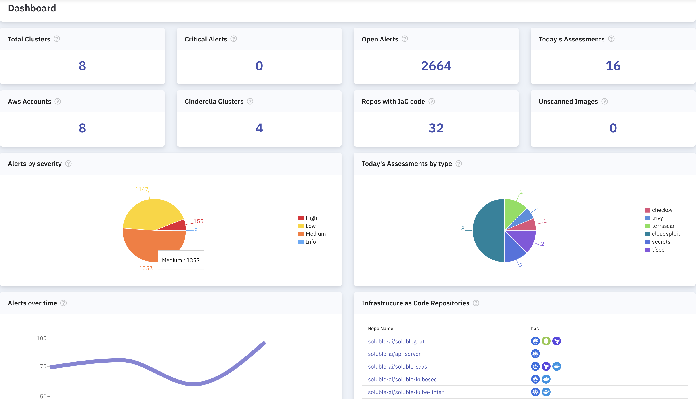
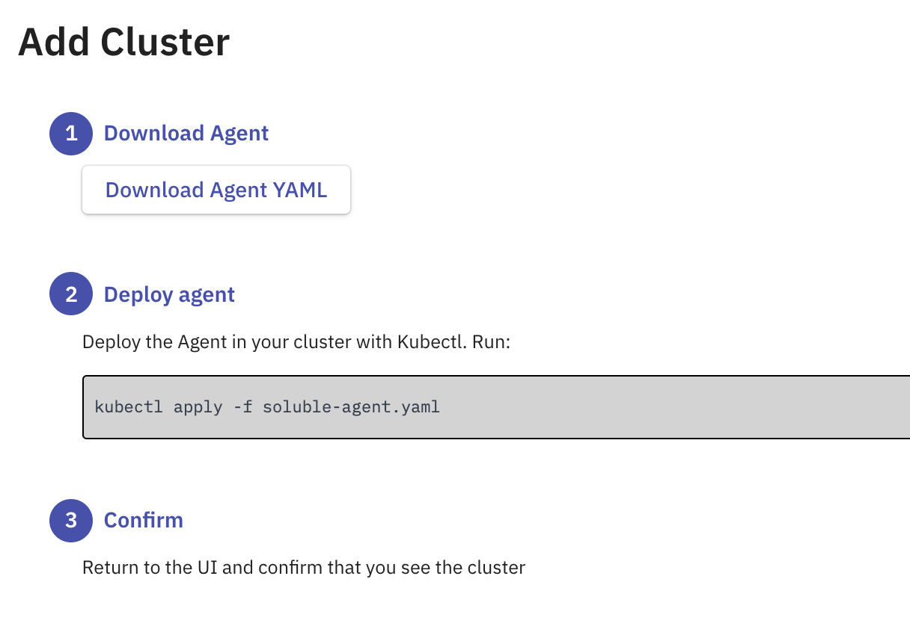

Soluble Basics
User Management
Every user signed up for Soluble is tied to an organization. The first user from the organization sets up an account and has the ability to invite other people to his organization and can be assigned a role ( Owner, Write and Read ). Each invited user will be part of the organization they are invited to and they can also join a default organization of his own, so they can explore Soluble on their own.
Invite user
-
Under
settings, pressUsers. -
Under the Users, press
Invite.
-
Provide the email address of the person whom you would like to invite to your organization and select a role from the dropdown. User roles explained below.
-
Press
Invite
Roles
Each user role is specific to that particular organization where it was applied.
-
Owner- The user who created the initial account for the organization is the Owner. The Owner will have access to all the functionalities in that particular organization. They have the permission to grant / revoke permissions to the other users in the organization. -
Write- The user has the permissions for reading and writing any entities in the organization except forUsersandBilling. -
Read- The user has permissions to read anything in the organization.
Tokens
Soluble Tokens are of two types:
-
Access tokens - These are used for integrating Soluble with other party tools, such as
Soluble CLIetc. -
Agent tokens - These are used by Soluble agents deployed in Kubernetes clusters.
Generating Access token
To generate an access token
- Under
Settings, pressTokens. -
Under the access tokens, click on
Generate Access Token.
Agent Tokens
All the agent tokens used by Soluble agents for kubernetes should be visible under the Agent tokens.
Token Management
Any user with the right permissions will be able to Disable or Revoke tokens.

Organization Setup
The owner of the organization can configure the Organization settings, like the display name of the organization, Login provider for organization. Organization ID is provided by the Soluble itself, and users are not able to edit them.

Alerts
Alerts provide an easy way to handle any issues identified by the Soluble Fusion platform. Alerts can be created for the failed findings from the assessments from a finding's action
Soluble, when integrated with other third party platforms like Slack, Jira., provides an easy way to manage the security / configuration issues identified by Soluble, and automates Jira ticket creation with just a click of a button and Slack notification.

Dashboard
The Soluble dashboard provides an easy way for tracking, analyzing and displaying key information, which helps you to monitor the security / configuration issues in your infrastructure.

Integrations
Soluble provides an easy way to integrate with third party tools like
- Slack
- Jira
- AWS
- kubernetes
To integrate with the above tools, click on the Integrations sidebar navigation.
Slack
Soluble can be integrated with just a click of a button.
Configuring Slack with Soluble:
-
Navigate to
Integrationspage and click onSlackTileConfigurebutton.
Jira
You need a Jira API token for this.
Enter the following Jira details to finish the integration.
- URL - Domain of the Jira URL of your organization.
- Username - Jira username of the provided api token.
- Key - API token created above.
-
Default Project - Provides the default project that can be used by Soluble to create Jira tickets for Soluble alerts.

AWS
Soluble can be integrated with AWS by running a simple script.
Adding an AWS Account:
-
Under the
Integrationsside menu, click on the AWS tile. -
Click on the
Add Accountbutton and copy the command provided and run it in your terminal.
kubernetes
To add kubernetes clusters to Soluble:
-
Under the
Kubernetesside navigation, selectClusters. -
Click on
Add Clusterand follow the three simple steps provided there.